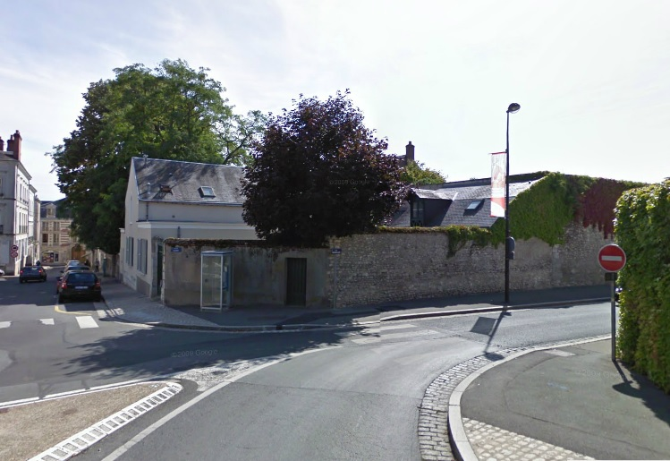
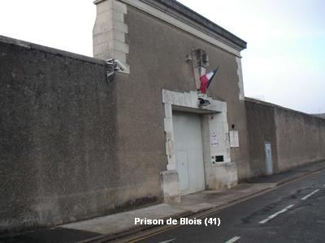
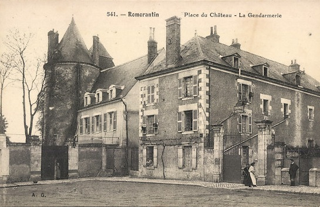
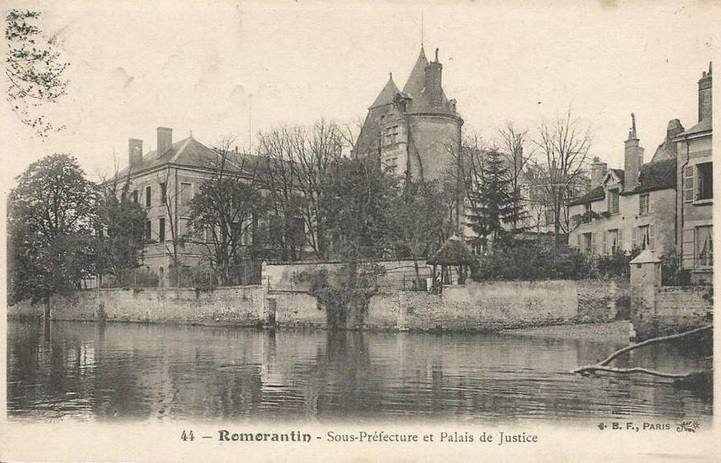
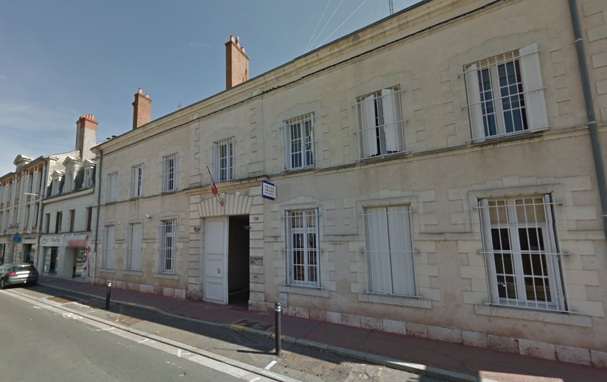

| Département | Images | Ville | Nom | Adresse | Période | Capacité | Histoire du lieu | Nombre d'exécutions |
| Loir-et-Cher (41) |  |
Blois | Maison d'arrêt des Cordeliers | Rue Beauvoir | XVIIIe siècle-1943 | Ancien couvent des cordeliers construit vers 1270. Accolé au palais de justice toujours en activité, lequel fut d'ailleurs construit sur une partie du jardin original. Incertitude quant à la superficie de la prison : s'étendait éventuellement de la place Guerry à la rue du Bourg-Neuf (la rue des Cordeliers et la rue Trouessard furent ouvertes après la fermeture de la prison). Les exécutions de 1888, 1890 et 1891 eurent toutes lieu à petite distance de la prison, sur la Grand'Pièce (Place de la République). Bâtiments démolis pour construire un groupe scolaire, à part la tour, qui peut être louée pour expositions ou soirées particulières. | Aucune exécution | |
| Loir-et-Cher (41) |  |
Blois | Maison d'arrêt | 25, rue Marcel Paul | En service depuis 1943 | 90 places (1962) | Suite à la fermeture - temporaire - des prisons de Vendôme et de Romorantin en 1934, le conseil général décide le 07 novembre 1935 de faire reconstruire les prisons blésoises jugées insalubres. Un terrain départemental, sis chemin de Saint-Léonard, est choisi pour l'occasion et les travaux débutent en 1938. La guerre interrompt la construction, et le manque de matériel durant l'Occupation ne fait que retarder l'achèvement du chantier. La prison, avec ses 108 cellules prévues pour 123 prisonniers, accueille ses premiers détenus le 16 septembre 1943. Ils sont 386 ! Et il y en aura davantage avec les arrestations de résistants, puis la Libération ! Si on omet les probables condamnés de l'épuration, la cellule pour condamnés à mort n'aura qu'un seul et unique occupant civil, six mois durant, entre mai et novembre 1946. Jadis à la sortie de la ville, la prison a été gagnée par l'urbanisation galopante et est désormais cernée d'immeubles et de pavillons. | Aucune exécution |
| Loir-et-Cher (41) |   |
Romorantin-Lanthenay | Maison d'arrêt du Château | Place du Château | -1949 | Dans le château des Comtes d'Angoulême, bâti aux alentours de 1450, le futur François 1er passa quelques années d'enfance... Curieusement, c'est également dans ce palais qu'en 1499 naquit sa future épouse Claude. La Révolution fait du château un palais de justice, et bientôt, dans les premières années du XIXe siècle, on rajoute d'autres bâtiments : l'un va servir de gendarmerie, l'autre de maison d'arrêt, le dernier de sous-préfecture. Dans les années 1970, les bâtiments de la prison et de la gendarmerie, désaffectés depuis de longues années, sont rasés. De nos jours, l'endroit - qui ne se visite pas - conserve la sous-préfecture et le tribunal. | Aucune exécution | |
| Loir-et-Cher (41) |  |
Vendôme | Prison des Ursulines | 27, Faubourg Chartrain | 1813-1952 | Cloître du couvent des Ursulines. La façade du faubourg Chartrain, représentée sur la photo, servait de porte commune à la gendarmerie et à la prison ; désormais, les gendarmes ont laissé place aux policiers. Fermeture le 1er juillet 1952. Les locaux servent de lieu de résidence HLM jusqu'en 1965, et la prison est démolie avant 1970. A sa place se trouve un parking. | Une exécution en 1933. |
{kind=link}
{kind=link}
{kind=link}
{kind=link}
{kind=link}